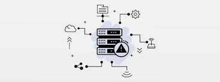

Windows
Windows
Windows hat eine intuitive grafische Oberfläche (GUI), mit der man einfach drauf navigieren kann und effizient Arbeiten kann. Das Startmenü ist der zentrale Zugangspunkt für Programme und Einstellungen. Mit Funktionen wie Snap Assist kann man Fenster schnell anordnen, während die Taskleiste aktive Programme, Benachrichtigungen und Schnellzugriffe anzeigt.
Windows legt grossen Wert auf den Schutz von Daten und Systemen. Der integrierte Windows Defender hat Echtzeitschutz vor Viren und Malware. Mit BitLocker können Festplatten sicher verschlüsselt werden. Mit regelmässigen Updates kann man sicherheitslücken schnell schliessen.
Es enthält viele Tools zur Systemverwaltung und Fehlerbehebung. Der Task-Manager überwacht laufende Prozesse und zeigt die Ressourcennutzung an. Die Datenträgerverwaltung hilft bei der Partitionierung und Formatierung von Festplatten. Systemereignisse und Fehlerprotokolle können über die Ereignisanzeige eingesehen werden.
Windows ist bekannt für seine breite Unterstützung von Software und Hardware. Es ist kompatibel mit vielen Anwendungen, zum Beispiel Office-Programme und Grafiksoftware. Ausserdem unterstützt es verschiedene Peripheriegeräte wie Drucker und Scanner. Gängige Treiber werden automatisch erkannt und installiert.
Windows kombiniert Benutzerfreundlichkeit, Vielseitigkeit und Sicherheit. Die regelmässige Weiterentwicklung stellt sicher, dass das System den Anforderungen moderner Nutzer gerecht wird. Es ist egal ob für private oder geschäftliche Zwecke, Windows ist eine der beliebtesten Betriebssysteme weltweit.